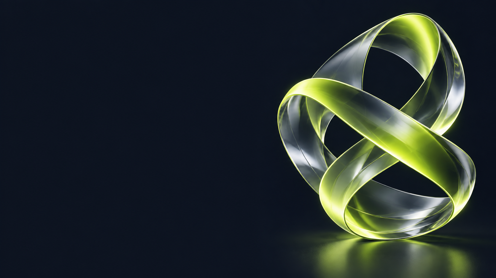

ACADEMIC ASSISTANT
UniTrack
Независимый помощник студента: оценки, расчёт необходимых баллов и рекомендации.An independent student companion: grades, required-score calculations and recommendations.
Открыть UniTrackExplore UniTrack
УНИВЕРСИТЕТСКИЕ ПРОЕКТЫUNIVERSITY PROJECTS
Помогаю студентам. Делаю ИИ понятнее.
Исследую, как технологии понимают речь.Helping students. Making AI approachable.
Exploring how technology understands speech.
ACADEMIC ASSISTANT
Независимый помощник студента: оценки, расчёт необходимых баллов и рекомендации.An independent student companion: grades, required-score calculations and recommendations.
Открыть UniTrackExplore UniTrackAI MASTERCLASS MATERIALS
Сайт мастер-класса: 60 сценариев KZ/RU, презентации, учебные материалы и общий QR-код.A masterclass website: 60 KZ/RU scenarios, presentations, practice materials and a shared QR code.
Открыть материалыExplore the materialsNLP / ASR RESEARCH
Казахская детская речь: анализ Whisper/MMS, проектирование интеграции Telegram-бота и постобработки текста.Kazakh children’s speech: Whisper/MMS analysis, Telegram bot integration design and text post-processing.
Сертификат о вкладеCertificate of contributionPROJECT RECOGNITION
Благодарность КазНУ имени аль-Фараби за участие в исследовании казахской детской речи.Recognition from Al-Farabi Kazakh National University for contributing to Kazakh children’s speech research.